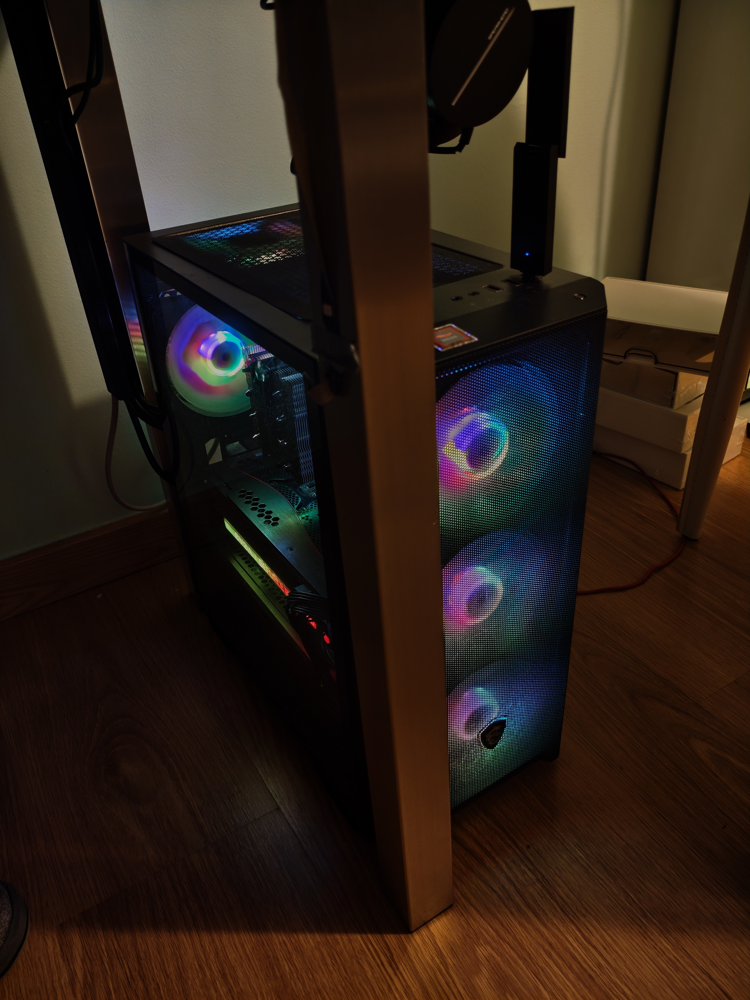
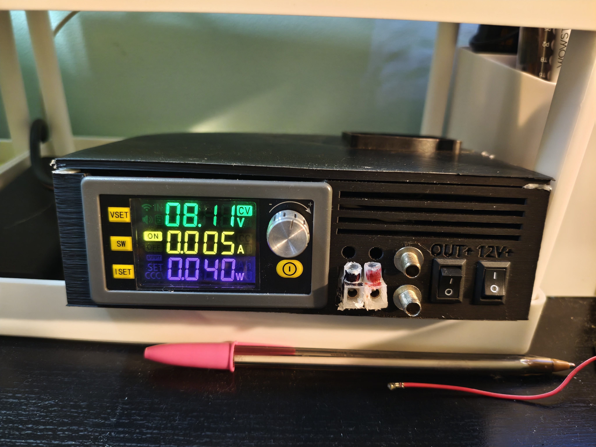
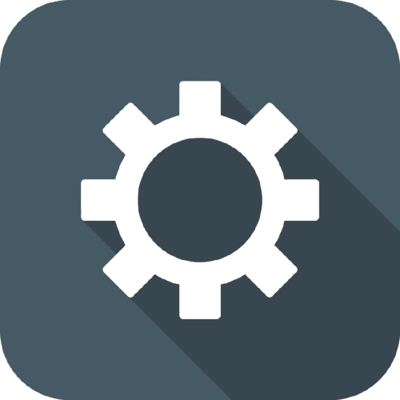

Welcome to XacOS beta!
Introduction
Hello World!
Name: Xacobe
Location: Spain
Age: 16
Favourite color: Green
Passion: Computer stuff ;) (More on that later)
Pet: Fiera .jpg)
Some of my favourite music
Feel free to explore my OS!
Thanks to Hack Club for their amazing projects!
XacOS



Time
My PC
I custom-built this PC when my previous laptop's GPU died.
I was at first unsure if I would be able to make a full working computer,
but I ended up being very lucky with the pricing of second-hand parts
and managed to get it working! (Altough at first I bought a PSU without
the right connectors, so I had to buy a new one) It ended up being less
expensive than I had expected! Less than 600€
Here are the specs if you are interested:
- CPU: AMD Ryzen 5 5600X
- GPU: EVGA GeForce RTX 3080
- RAM: 24GB DDR4
- Storage: 1TB NVMe SSD
- Motherboard: gigabyte B550mk
- PSU: 750W P750BS
- Case: MSI MAG M100R
Homelab
I started a long time ago with just a Raspberry Pi 4b that my parents had gifted me
and had no idea what to do with it. I installed Home Assistant on it and I was
(and still am) obssesed with integrating all our IoT devices. (Tuya ones are the most difficult)
This year I bought a second-hand miniPC to expand operations. I now have Nextcloud with 2x 2TB drives in RAID
, Home Assistant, Pihole, Frigate... I am very proud of it :)
DIY Lab PSU
This is a project I'm quite proud of. I know
it has a lot of flaws that could be corrected
but it is good enough for my needs
It is basically a 12V 5A PSU with a SK120
, a fan and a couple connectors inside
a 3D printed case